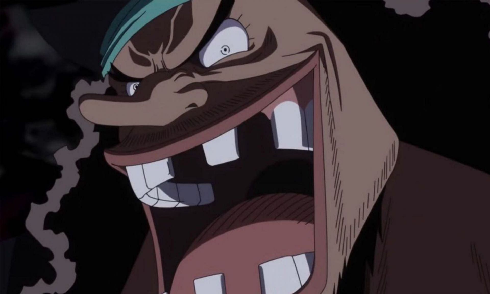
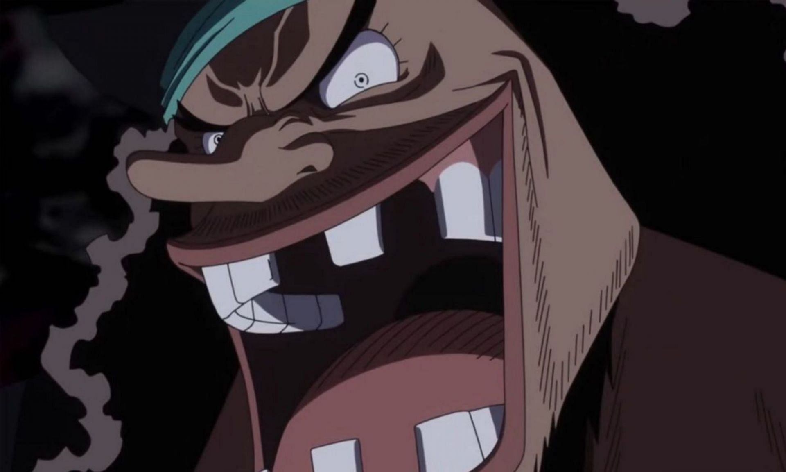

Kapan One Piece tamat?
Sebagian besar dari fans anime terutama fans One Piece pasti mempertanyakan kapan One Piece tamat? Dan ini jawaban dari Oda...
Baca SelengkapnyaHalo Cliff disini
Manusia biasa yang suka One Piece.
 


Sebagian besar dari fans anime terutama fans One Piece pasti mempertanyakan kapan One Piece tamat? Dan ini jawaban dari Oda...
Baca SelengkapnyaSudah sejak lama pertanyaan “apa sebenarnya One Piece?” atau “harta karun misterius apa yang sosok Gol D. Roger tinggalkan untuk mereka yang menemukannya?” terdengar di kalangan pecinta seri ini. Karena harta karun ini masih sangat misterius (bahkan kita belum tahu bentuknya seperti apa), banyak orang yang kemudian berspekulasi tentang hal tersebut. Berikut adalah beberapa spekulasi tentang One Piece...
Baca SelengkapnyaOne Piece sudah mendapat pengakuan sebagai salah satu anime terbaik sepanjang masa. Popularitas series shounen yang satu ini seakan tak pernah mati dimakan zaman, meski penayangannya sudah dimulai sejak tahun 1999 lalu dan masih mengudara hingga saat ini.
Baca SelengkapnyaEmail : clifezra@gmail.com
IG : clifftukunang